从零开始使用浙江大学自动健康打卡
本文最后更新于：May 11, 2022 pm
由于目前一天不打卡就会被取消蓝码，所以大家对自动打卡的需求也就越来越高。
为节约每天重复的打卡时间，也尽可能避免忘记打卡造成的麻烦，自动打卡应运而生。
为了降低自动打卡的使用门槛，所以就有了这份胎教级教程，从零开始实现自动健康打卡。
顺带一提，目前github上的自动打卡在众多开发者的努力下功能已较为完善，稳定性也比最初提升了不少。
〇、特别声明
本文禁止任何形式的转载。
本文仅用于学习交流使用，请严格遵守校纪校规，如实上报健康状态。对一切非法使用所产生的后果概不负责。
若本文侵犯到您的利益请联系我删除。
一、注册github
神说：要有github。
作为世界上最大的同性交友网站代码托管平台，github上超2亿代码库。我目前是用的自动打卡也是来自于此。
打开github，点击右上角的Sign Up 根据提示完成注册即可。（国内访问github可能不稳定，若无法访问可以过一段时间再试。如果有魔法的话访问速度会快一点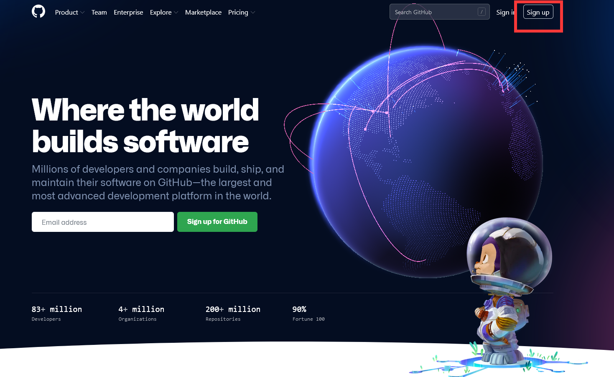
二、 Fork自动健康打卡仓库
完成注册并登录后，打开自动健康打卡仓库，我目前使用的就是这个AutoCard仓库。
然后点击右上角的Fork，也就是将代码复制到自己的仓库。然后点击create fork
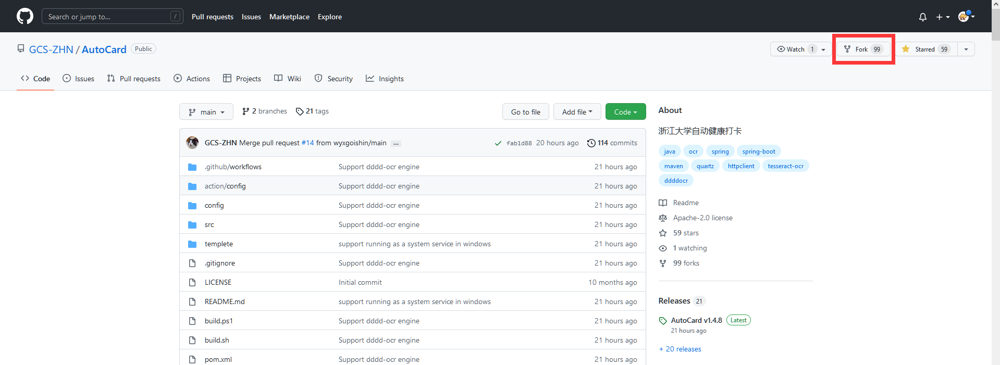
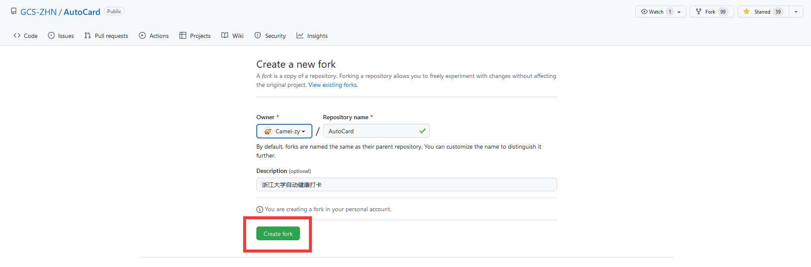
页面跳转后，若红框处左上角为你的用户名，且下面有一行fork from什么的小字，则说明fork已完成。
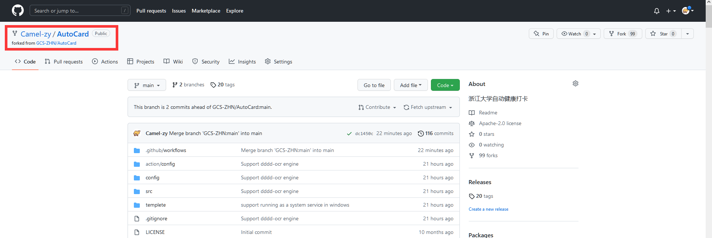
三、钉钉推送
因为自动打卡可能会失败，需要你每天关注一下有没有打卡成功，所以需要开个钉钉推送功能。
首先随便新建个群，用于消息推送。
然后在电脑端（你前面不会一直是在手机上操作的吧）打开钉钉的那个群，点右上角群设置->智能群助手->添加机器人->设置
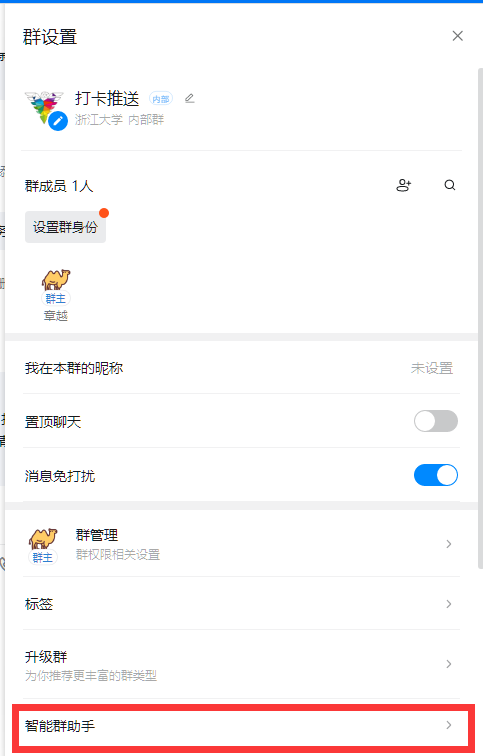
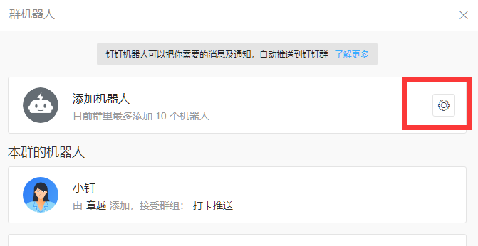
点击自定义->添加
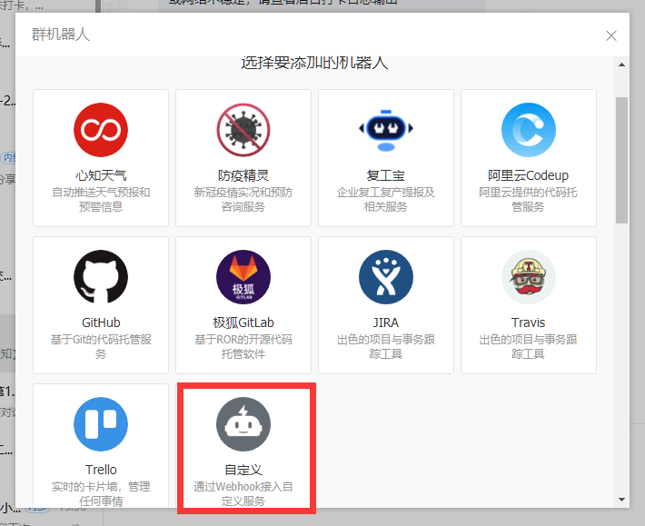
机器人名字可随便写，但注意勾选加签，并点击下面的复制按钮复制生成的密钥，找个地方记录下，等会要用
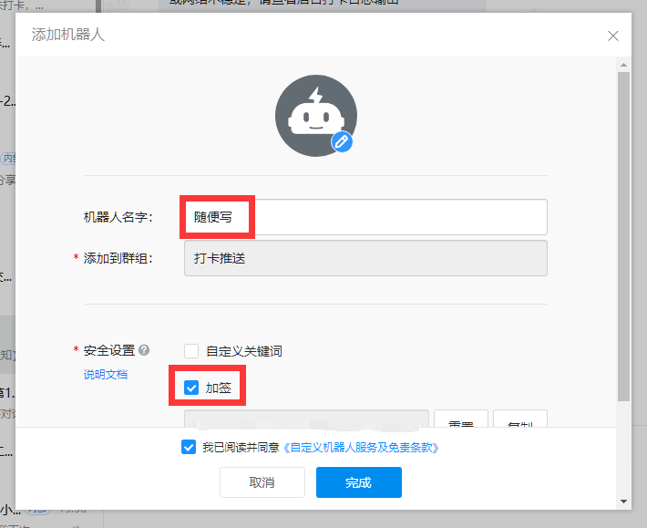
点击完成后，点击复制按钮复制生成的Webhook，找个地方记录下，等会要用
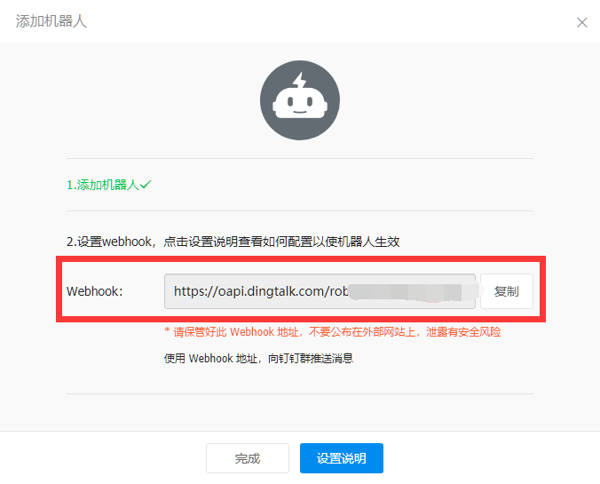
四、仓库设置
添加Secrets
回到刚才你的仓库，点击Settings->Secrets>Actions
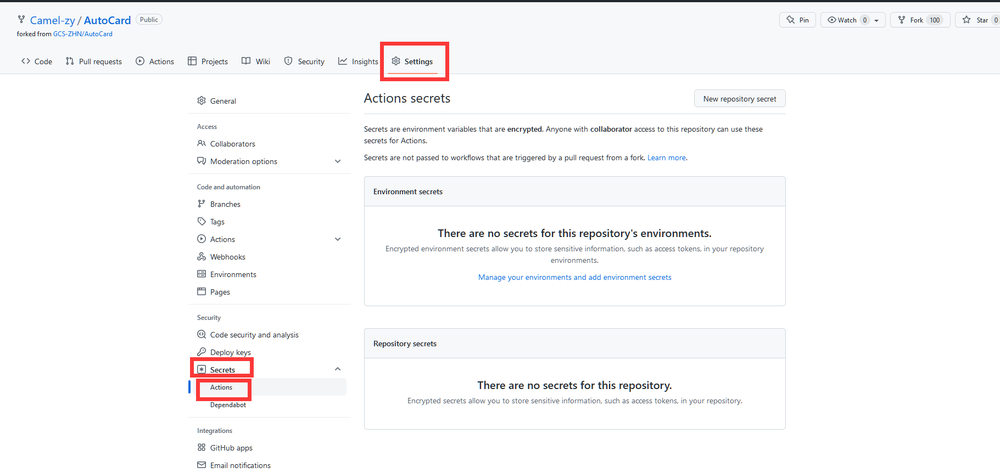
点击New repository secret
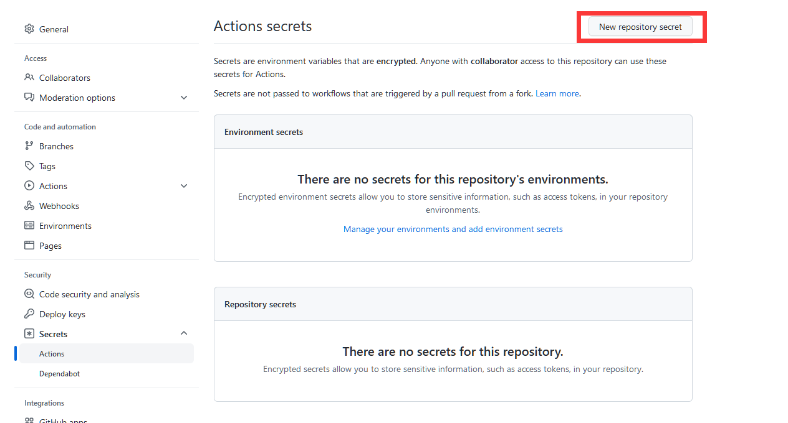
Name中填写AUTOCARD_USER Value中填写你的浙大通行证账号 然后点击Add secret
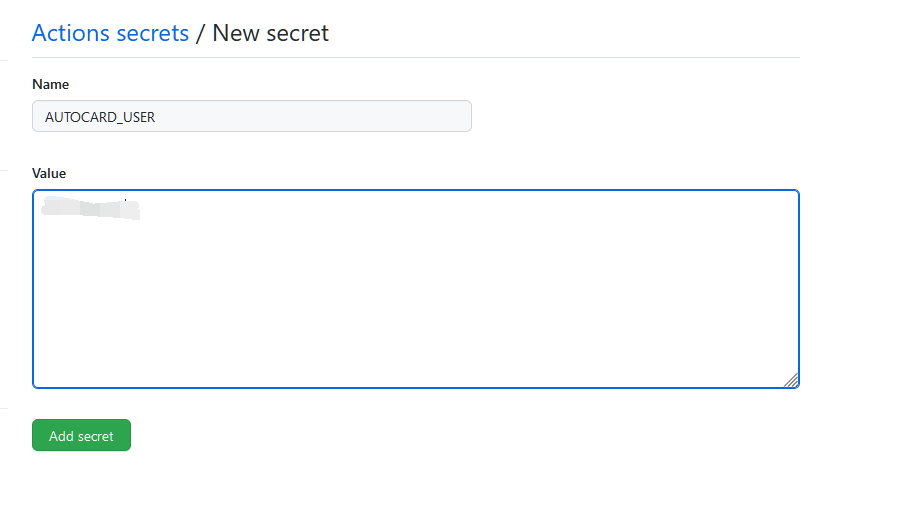
重复上述两步操作继续添加secret 其中Name和Value参照以下表格
那个AUTOCARD_CACHE_FLAG的Value填1即可
| Name | Value | 备注 |
|---|---|---|
| AUTOCARD_USER | 浙大通行证账号 | |
| AUTOCARD_PWD | 浙大通行证密码 | |
| AUTOCARD_DINGTALK_URL | 第三步中记录的Webhook | |
| AUTOCARD_DINGTALK_SECRET | 第三步中记录的密钥 | |
| AUTOCARD_CACHE_FLAG | 1 |
用于程序缓存输出提供一个索引，任意值即可 |
| AUTOCARD_MAX_TRIAL | 5 |
打卡失败后重试次数 |
| AUTOCARD_DELAY | 0 |
是否随机延迟打卡 |
可选项：打卡时间修改
回到code页面，点击红框中的workflow
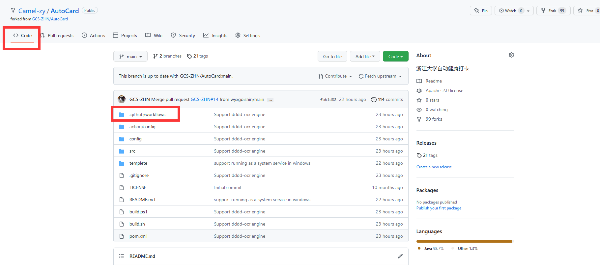
点击schedule.yml
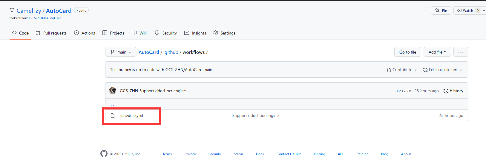
点击右侧的笔
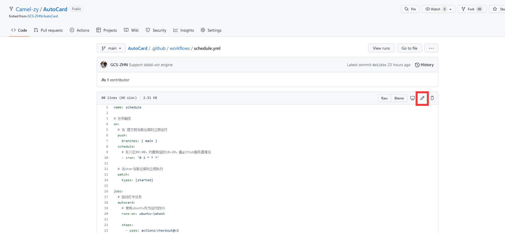
修改此处的cron即可修改每日打卡的时间，例如我将这个改为了- cron: '20 16,0 * * *'，即协调世界时的每天16:20和00:20尝试打卡一次。（每天打两次是双保险，自动打卡有可能会失败） 具体cron语法可以自行查询
修改完后点击Start commit -> Commit changes 即可
修改完后点击Start commit -> Commit changes 即可
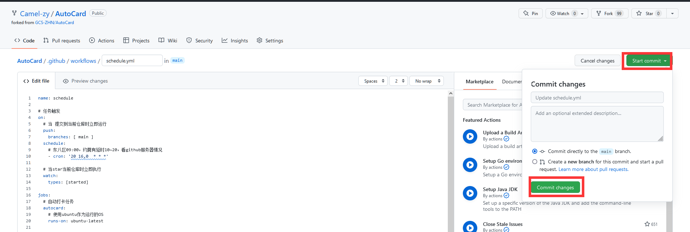
启动Actions
点击上方Actions，并点击绿框启用Actions
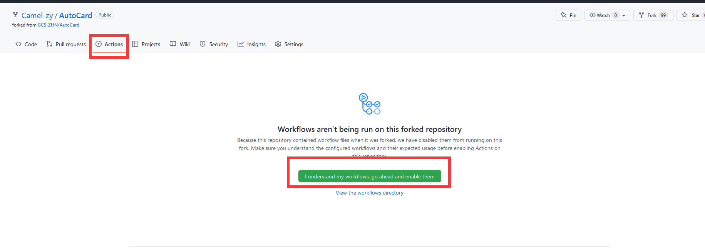
点击左边的schedule 再点击右边的enable workflow
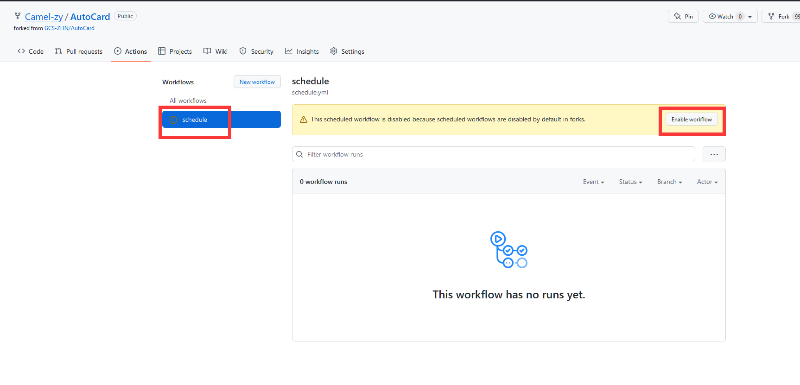
此时已完成设置。
测试一下下
看到仓库右上角的小星星没
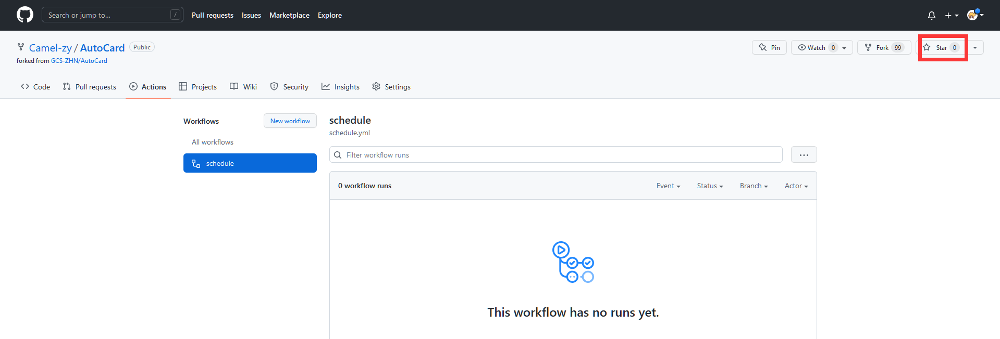
下面要跟着做呦
点一下这个小星星，它会变亮。
再点一下，它就灭了。
这真的不是单纯为了逗你玩 其实是为了让Action跑一遍
这边这个黄圈就意味着已经在运行啦
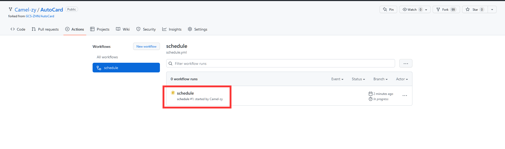
稍等一会，这个东西可能有点慢。
过一段时间看看钉钉刚才那个群里有没有收到消息推送。
okk如果一切顺利的话应该就已经完成设置啦，记得每天看一下有没有打卡成功就行啦。
五、部分问题处理
如果不熟悉上述的这些东西的话，自动打卡出问题时可能处理起来也会比较困难。
那遇到问题怎么办呢？
自己看着办咯
可以康康下面的常见问题。
代码库需要更新
这个自动健康打卡的库有大佬在维护，时不时可能会需要更新。
辣么如何更新呢？
进入你的仓库Code页面 点击Fetch upstream。如果显示如下图的话就需要更新。
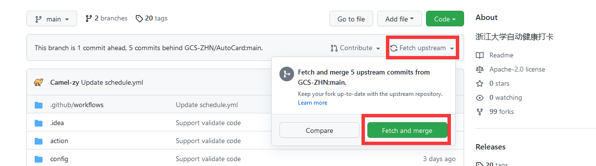
点击Fetch and merge 大概还需要再点个绿框 这样就可以啦。
无需更新的话是如下图所示。
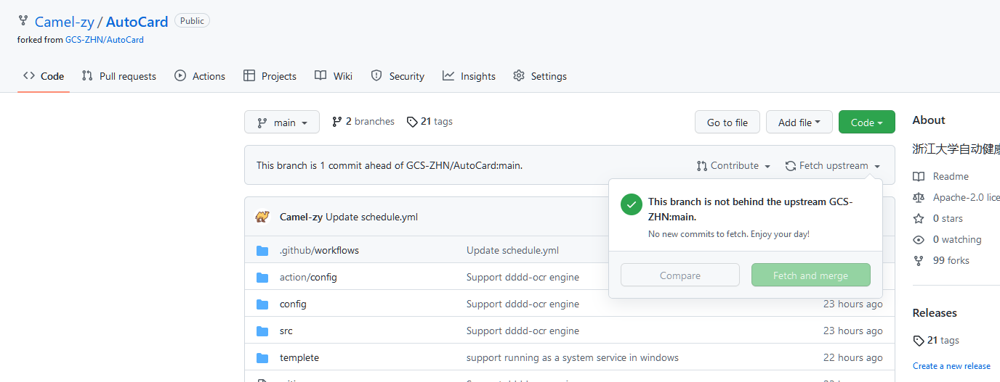
打卡失败 如何重新启动脚本？
一般来讲提示信息获取失败或者压根没推送信息那就说明自动打卡失败了。
进入你的仓库Actions界面 点击红框中的schedule
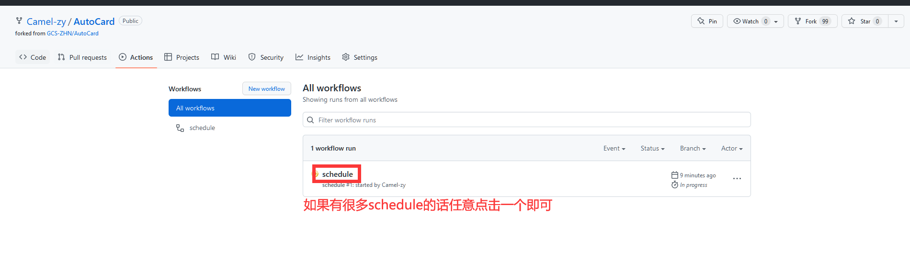
再点击Re-run all jobs -> Re-run jobs
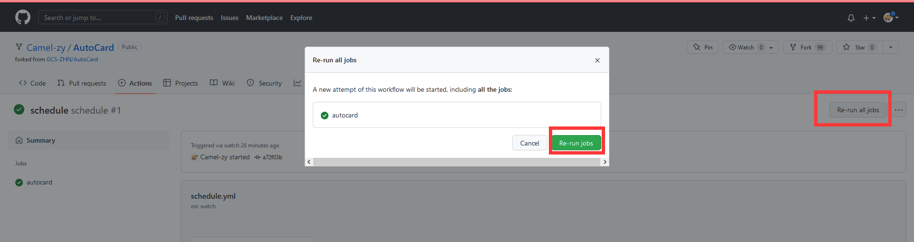
即可重新运行一次。
本博客所有文章除特别声明外，均采用 CC BY-SA 4.0 协议 ，转载请注明出处！